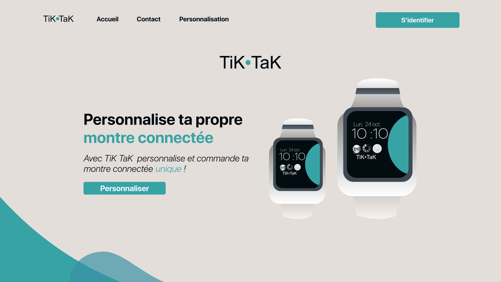

TiK TaK
Ce projet a été réalisé dans le cadre d’une SAE récente (examen) qui a duré 3 jours et demi. L’objectif était de créer un site web nous permettant de personnaliser et commander des montres connectées. Ainsi j’ai dû tout d’abord mettre au point des outils de gestions de projets tels que clockify ou des GANTT pour me permettre d’organiser mes tâches avec le peu de temps imparti. Ensuite j’ai dû mettre au point une stratégie de nudge marketing. Puis j’ai commencé la partie design avec la création de la montre personnalisable sur illustrator puis la maquette du site web sur figma. Et enfin la partie développement avec la gestion des données et la création de polices et de table en sql sur supabase, pour finir par l’intégration en vuejs et talwindcss.
Le site permet donc personnaliser sa propre montre avec une gamme de couleur fourni. L’utilisateur doit se connecter via google pour pouvoir enregistrer ses commandes et peut les retrouver dans une page dédiée. Ce site est hébergé par netlify et j’ai créé son nom de domaine sur infomaniak.
Liens :
Dossier Nudge MarketingMaquette
Site Web